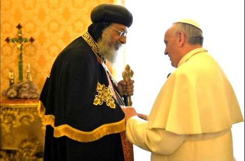

6 Gedanken zur Einheit der Kirche Christi Papst Franziskus beim Besuch des koptischen Papst- Patriarchen im Vatikan: "Wir ersehnen den Tag, an dem wir Gottes Willen erfüllen und gemeinsam an dem einen Kelch teilhaben werden" (http://www.kath.net/news/41246) Die erste Europareise S. H. Papst Tawadros II, die Anfang Mai 2013 stattfand, hatte ganz im Zeichen der Wiederbelebung ökumenischer Beziehungen gestanden. Zunächst hatte er den neuen Amtsinhaber in Rom, Papst Franziskus, besucht, um den Dialog zwischen den beiden alten Kirchen wieder aufzunehmen, der seit Jahrzehnten ins Stocken geraten war. Gemäß einer Äußerung des koptischen Papstes, die seinerzeit veröffentlicht worden war, hieß es, es stehe nun der Anerkennung der „einen“ Taufe nichts mehr im Wege. Die Kirchenoberhäupter hatten sich gegenseitig versprochen, täglich füreinander zu beten. Beide hatten ihrer festen Zuversicht Ausdruck verliehen, dass alle Hindernisse auf dem Wege zur Einheit ihrer Kirchen durch Gebet und gegenseitige Liebe überwindbar seien.
St. Markus · 2014 · Deutsch
Gedanken zur Einheit der Kirche Christi
Ausgabe 2 · Seite 6
